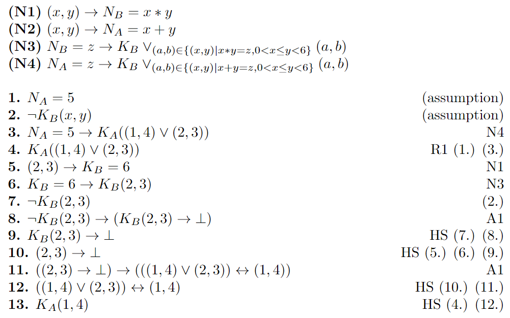

In a first attempt to use Epistemic Logic to reason about the number game we tried to do this without announcements. Even though we were ultimately not able to represent repeated "I don't know" statements we still want to present our progress: As an example, we assume that the numbers have a range of [1,6) and that Alice recived the sum and Bob the product. In order to use formal proofs for the number game we use S5 with additional rules to express game specific knowledge. We call these rules N1-N4. N1 states that the number N_B that Bob receives is the product of the two numbers and N2 expresses that the number N_A that Alice receives is the sum of both numbers. In addition to this, N3 expresses that Bob only considers the number combinations possible that have a product of N_B and similarly, N4 expresses that Alice only considers number combinations possible that have a sum of N_A. An example of a formal proof is shown below. The proof shows that if Bob states that he does not know, Alice knows that the numbers are 1 and 4.
Even though this example shows successfully how knowledge can be derived using these rules, there are major limitations to this method. The problem is that we can not consider knowledge that evolves over time. For example Alice may states that she does not know the numbers in the beginning, but later she states that she does know them. This type of non-monotonic can not be represented. This motivated us to use announcements instead.